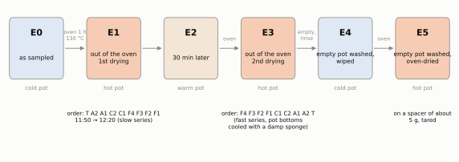
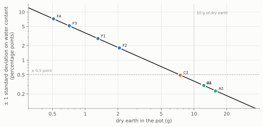
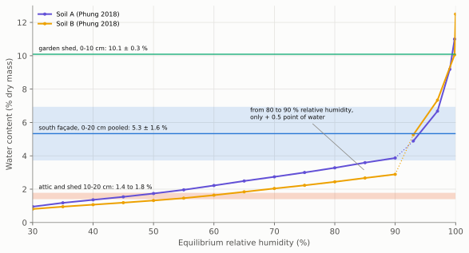

Data and code
Everything behind the paper is in the humidite-de-la-bauge/
folder of the GitHub repository: raw readings, the code that rebuilds
the numbers and figures, and the photos. Text, data, figures and photos
under CC BY 4.0; code under the MIT licence. File and column names are
in French; the data dictionary explains them.
Data
donnees/pesees.csv: the masses read, one row per pot and per step (E0 to E5), with all repeated readings and the weighing rank.donnees/prelevements.csv: one row per pot (wall, depth, place, drilling tool).donnees/etapes.csv: the six steps, their weighing conditions and the weighing order of the out-of-oven series.donnees/isotherme_phung_2018.csv: the published points of two laboratory cob soils (Phung’s thesis, 2018), with the annex each comes from: enough to redraw the isotherm figure, not an isotherm of these walls.donnees/resultats_calcules.json: weighing noise, water content of each pot, equivalent relative humidity on the two published soils, water balance of the shed skin.- Column dictionary:
donnees/README.md.
Code
Python 3 with matplotlib and numpy; Pillow and pandoc for the build. No file from outside the topic. From the repository root:
python3 humidite-de-la-bauge/code/grandeurs.py # noise, water contents, equivalent relative humidity
python3 humidite-de-la-bauge/code/figures_humidite.py # the five figures (French and English)
make construire # all of the above, plus the paper (.docx) and this siteFigures





How to cite
Rémi Cura (2026). Moisture in cob. In: Renovating earth buildings: field notes, data and code repository, https://github.com/Remi-C/renovation-terre-crue. DOI (Zenodo): to come.